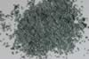

|
|
(For further information on spectroscopy, see:
http://speclab.cr.usgs.gov)
TITLE: Antigorite NMNH96917 120um DESCRIPT
DOCUMENTATION_FORMAT: MINERAL
SAMPLE_ID: NMNH96917
MINERAL_TYPE: Phyllosilicate
MINERAL: Antigorite (Kaolinite-Serpentine group)
FORMULA: (Mg,Fe+2)3Si2O5(OH)4
FORMULA_HTML: (Mg,Fe+2)3Si2O5(OH)4
COLLECTION_LOCALITY: Rossa, Antigors Valley, Italy
ORIGINAL_DONOR: Smithsonian
CURRENT_SAMPLE_LOCATION: USGS Denver Spectroscopy Laboratory
ULTIMATE_SAMPLE_LOCATION: USGS Denver Spectroscopy Laboratory
SAMPLE_DESCRIPTION:
Polymorphous with Clinochrysotile, Lizardite, and Orthochrysotile.
The sample was ground in an alumina mortar and pestle and was wet sieved
using methanol into
<30 µm (f),
30-45 µm (e),
60-104 µm (d),
104-150 µm (c),
150-250 µm (b) and
>250 µm (a)
size fractions. (Letter denotes spectrum designation)
The mean grain size of each sieve fraction is:
<30 µm (f),
32 µm (e),
70 µm (d),
120 µm (c),
165 µm (b) and
>250 µm.(a)
IMAGE_OF_SAMPLE:
A

END_SAMPLE_DESCRIPTION.
XRD_ANALYSIS:
Analysis by Gene Whitney, USGS Denver, indicate that the sample was representative of its structural class. Analysis by Norma Vergo indicate that the sample contains a medium amount of hornblende and other minerals. Hornblende is estimated to be 6-8 volume percent. Spectrally, the presence of hornblende is not believed to introduce specific absorption features to the antigorite, but may contribute to the general lowering of the reflectance at wavelengths less than 1.5µm.
King, T.V.V. and R.N. Clark, 1989, Spectral Characteristics of Chlorites and Mg-Serpentines Using High-Resolution Spectroscopy. J. Geophys. Res., 13,997-14,008.
Clark, R.N., T.V.V. King, M. Klejwa, G. Swayze, and N. Vergo, 1990, High spectral resolution reflectance spectroscopy of minerals: J. Geophys Res. 12653-12680.
END_XRD_ANALYSIS.
COMPOSITIONAL_ANALYSIS_TYPE: XRF # XRF, EM(WDS), ICP(Trace), WChem
| COMPOSITION KEYWORD |
Oxide ASCII |
Amount | Weight Percent, % |
Oxide html |
|---|---|---|---|---|
| COMPOSITION: | SiO2 | 41.30 | wt% | SiO2 |
| COMPOSITION: | TiO2 | 0.15 | wt% | TiO2 |
| COMPOSITION: | Al2O3 | 1.59 | wt% | Al2O3 |
| COMPOSITION: | Fe2O3 | 3.61 | wt% | Fe2O3 |
| COMPOSITION: | FeO | 4.51 | wt% | FeO |
| COMPOSITION: | MnO | 0.11 | wt% | MnO |
| COMPOSITION: | MgO | 36.30 | wt% | MgO |
| COMPOSITION: | CaO | 0.43 | wt% | CaO |
| COMPOSITION: | Na2O | 0.04 | wt% | Na2O |
| COMPOSITION: | K2O | 0.02 | wt% | K2O |
| COMPOSITION: | H2O | 11.19 | wt% | H2O |
| COMPOSITION: | Total | 99.26 | wt% | |
| COMPOSITION: | O=Cl,F,S | wt% | #correction for Cl, F, S | |
| COMPOSITION: | New Total | wt% |
COMPOSITION_TRACE: None
COMPOSITION_DISCUSSION:
This is an iso chemical end member Mg-rich serpentine. Spectrally the mineral separates do not show absorptions due to any mineral species other than antigorite. See XRD discussion.
END_COMPOSITION_DISCUSSION.
MICROSCOPIC_EXAMINATION:
Platy habit, pale green color, 2 vol% white micaceous mineral that could be a variant of the green antigorite or a mineral contaminant, opaque inclusions altered to sesquioxides (total amount 3-5 vol% of grain volumes), first order gray interference color, moderate relief. All these properties are consistent with antigorite. G. Swayze.
Grain size fraction 104-150 µm contained 8 vol% magnetite and 30 vol% clear feldspar?
END_MICROSCOPIC_EXAMINATION.
SPECTROSCOPIC_DISCUSSION:
END_SPECTROSCOPIC_DISCUSSION.
SPECTRAL_PURITY: 1b2b3b4_ # 1= 0.2-3, 2= 1.5-6, 3= 6-25, 4= 20-150 microns
| LIB_SPECTRA_HED: | where | Wave Range | Av_Rs_Pwr | Comment |
|---|---|---|---|---|
| LIB_SPECTRA: | splib04a r 502 | 0.2-2.7µm | 200 | a g.s.= 1000µm |
| LIB_SPECTRA: | splib04a r 514 | 0.2-2.7µm | 200 | b g.s.= 165µm |
| LIB_SPECTRA: | splib04a r 526 | 0.2-2.7µm | 200 | c g.s.= 120µm |
| LIB_SPECTRA: | splib04a r 538 | 0.2-2.7µm | 200 | d g.s.= 70µm |
| LIB_SPECTRA: | splib04a r 550 | 0.2-2.7µm | 200 | e g.s.= 32µm |
| LIB_SPECTRA: | splib04a r 562 | 0.2-2.7µm | 200 | f g.s.= 15µm |
| LIB_SPECTRA: | splib05a r 1138 | 0.2-2.7µm | 200 | a g.s.= 1000µm |
| LIB_SPECTRA: | splib05a r 1153 | 0.2-2.7µm | 200 | b g.s.= 165µm |
| LIB_SPECTRA: | splib05a r 1168 | 0.2-2.7µm | 200 | c g.s.= 120µm |
| LIB_SPECTRA: | splib05a r 1183 | 0.2-2.7µm | 200 | d g.s.= 70µm |
| LIB_SPECTRA: | splib05a r 1198 | 0.2-2.7µm | 200 | e g.s.= 32µm |
| LIB_SPECTRA: | splib05a r 1213 | 0.2-2.7µm | 200 | f g.s.= 15µm |
| LIB_SPECTRA: | splib06a r 2797 | g.s.= | ||
| LIB_SPECTRA: | splib06a r 2813 | g.s.= | ||
| LIB_SPECTRA: | splib06a r 2829 | g.s.= | ||
| LIB_SPECTRA: | splib06a r 2876 | g.s.= | ||
| LIB_SPECTRA: | splib06a r 2892 | g.s.= | ||
| LIB_SPECTRA: | splib06a r 2939 | g.s.= | ||
| LIB_SPECTRA: | splib06a r 2955 | g.s.= | ||
| LIB_SPECTRA: | splib06a r 3002 | g.s.= | ||
| LIB_SPECTRA: | splib06a r 3018 | g.s.= | ||
| LIB_SPECTRA: | splib06a r 3065 | g.s.= | ||
| LIB_SPECTRA: | splib06a r 3081 | g.s.= |
{kind=link}